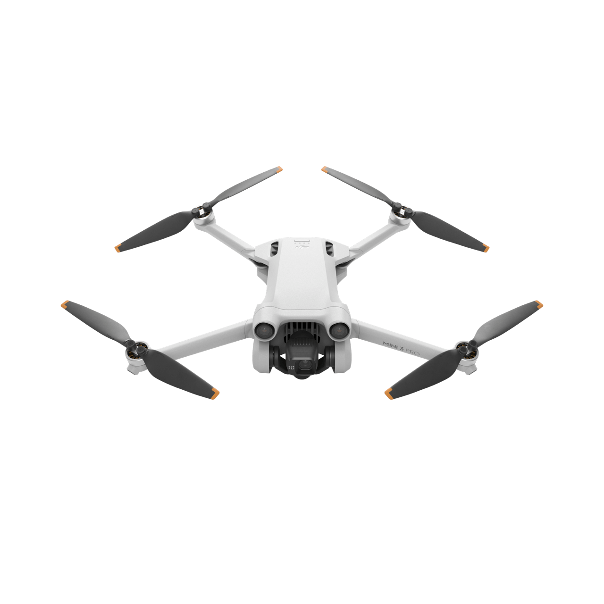
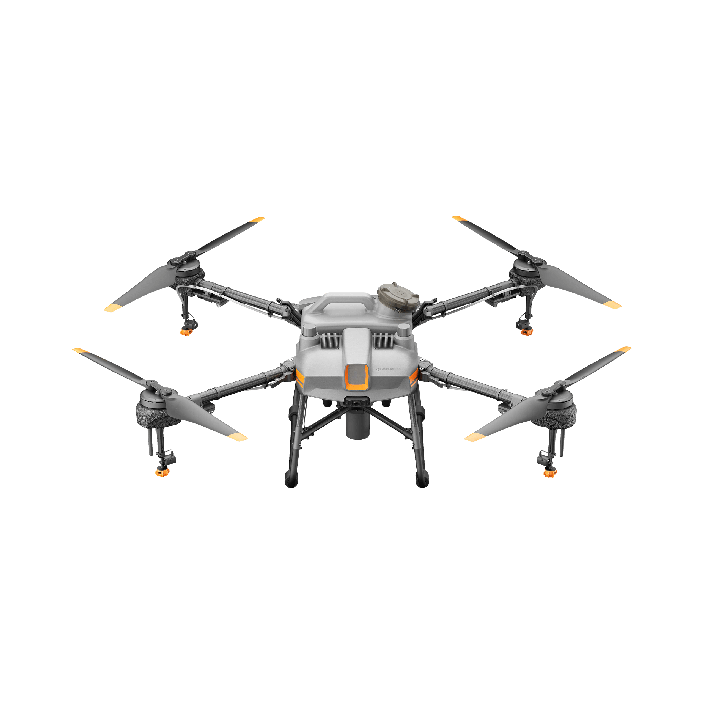

DRONES
Contamos con drones para cualquier utilidad que necesites

DJI MINI 3 PRO

DJI AGRAS T10

Contamos con drones para cualquier utilidad que necesites
INCLUYE:
CARACTERISTICAS
GARANTIA
¡Hasta 35 días para devolverlo si no te gusta! 12 meses de garantía del producto ¡Cuando quieras renovar tu equipo, o saltar a un segmento superior te tomamos como parte de pago tu drone usado y te llevas el nuevo!
INCLUYE:
CARACTERISTICAS
GARANTIA
¡Hasta 35 días para devolverlo si no te gusta! 12 meses de garantía del producto ¡Cuando quieras renovar tu equipo, o saltar a un segmento superior te tomamos como parte de pago tu drone usado y te llevas el nuevo!
INCLUYE:
CARACTERISTICAS
GARANTIA
¡Hasta 35 días para devolverlo si no te gusta! 12 meses de garantía del producto ¡Cuando quieras renovar tu equipo, o saltar a un segmento superior te tomamos como parte de pago tu drone usado y te llevas el nuevo!
DR(AG)ONES nació de la mano de un grupo de expertos y apasionados sobre productos de tecnología piloteados por telemando / radio control.
A medida que fue incrementando la popularidad de los drones aéreos y dada la alta complejidad en el diseño y uso de estos equipos, identificamos la necesidad de brindar un servicio integral al consumidor.
Asesoramiento personalizado
Nuestros instructores y tecnólogos tienen la mayor experiencia en el mercado y pueden ayudarte a elegir el producto adecuado para tus necesidades y deseos, garantizando máxima satisfacción.
Primer acercamiento
Veni a nuestras oficinas a conocer nuestra pista recientemente inagurada para pruebas y aprovecha a probar el producto que quieras junto con nuestros instructores, esto es sin compromiso de compra.
Plan canje
Si tenes un dron usado, podes entregarlo en forma de pago para uno nuevo! Nuestros especialistas realizaran una inspección y tasaran el valor de tu producto para acreditarlo como parte de pago de tu próximo dron.
Somos tan apasionados por lo que hacemos que creamos un Video Blog donde vas a encontrar intrucciones de uso, tips y trucos para que puedas disfrutar al maximo tu dron!
Estamos en Martinez, donde podes venir a visitar nuestras oficinas y reunirte con nuestros equipo de instructores y tecnólogos.
No te quedes con la duda, podemos brindarte la ayuda que necesitas para encontrar el dron de tus sueños.
Nuestra oficina esta ubicada en Martinez, Necochea 1728.
Nuestro horario de atención es de:
Lunes a Sábados de 8:00 a 17:00hs